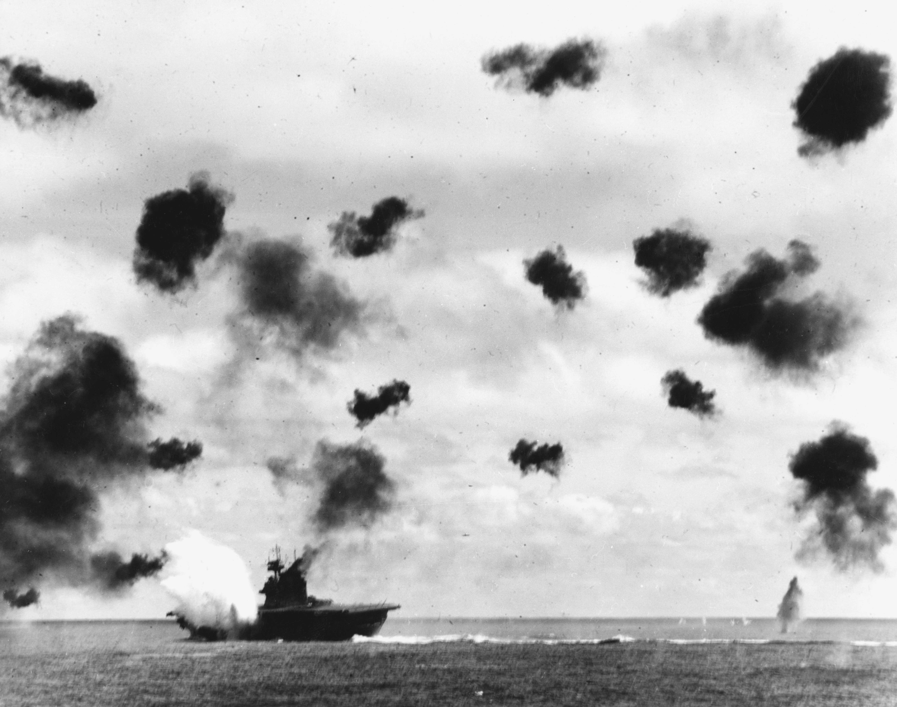
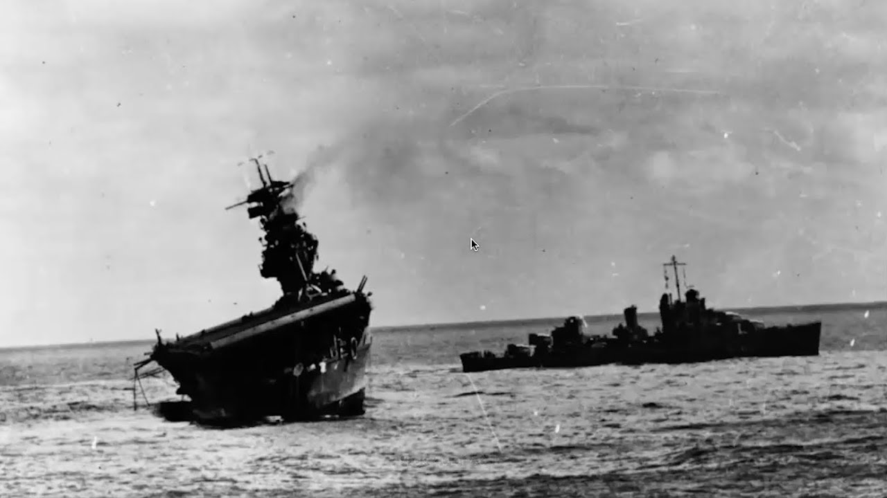

The Battle of Midway
Fought in early June 1942 around Midway Atoll in the central Pacific, the Battle of Midway destroyed four Japanese fleet carriers, blunted the Imperial Japanese Navy's offensive reach, and shifted the strategic balance in the Pacific War.
Japanese Perimeter Strategy and Codebreaking

Six months after the attack on Pearl Harbor, Imperial Japan controlled a vast maritime arc stretching from the central Pacific to Southeast Asia. Admiral Isoroku Yamamoto sought a decisive battle that would lure out and destroy the remaining U.S. aircraft carriers while extending Japan's defensive perimeter by capturing Midway Atoll.
Yamamoto's operational plan spread forces across multiple tasks—including a simultaneous operation toward the Aleutian Islands—and counted on American naval forces arriving piecemeal or too late to save Midway. That assumption rested on catching the U.S. Pacific Fleet off balance.
Unbeknownst to Japanese planners, U.S. naval intelligence at Station HYPO in Hawaii, under Commander Joseph Rochefort, had achieved major success decoding Japanese naval communications (JN-25). Analysts pieced together traffic indicating an imminent major operation against a target designated 'AF.'
To verify that 'AF' meant Midway rather than another location, intelligence officers arranged for Midway's garrison to transmit a routine or unencrypted message reporting a fresh-water shortage—which intercepts quickly matched with Japanese reports noting water trouble at 'AF.'
With strong confirmation of the target and timing, Admiral Chester W. Nimitz positioned his available carrier striking forces to ambush the approaching Japanese fleet rather than react blindly after an attack began.
Timing and positioning were critical across thousands of miles of open ocean. Rather than waiting on the defensive near Hawaii, Nimitz sent his carriers out to meet the incoming force north-east of the atoll.
Station HYPO's codebreaking effort relied on patient traffic analysis, pattern recognition, and coordination across naval intelligence centers. By cross-checking encrypted messages, call signs, and operational schedules, analysts turned fragments of intercepted radio traffic into actionable strategic warning for the Pacific Fleet command.
Midway's land-based aircraft and garrison endured heavy early pressure while serving as a forward observation and strike base, helping strain Japanese schedules and complicate fleet operations around the atoll.
Carrier Clash and the Turning Point on June 4

Nimitz could muster only three operational carriers—USS Enterprise, USS Hornet, and USS Yorktown, which had been hurriedly patched up in Pearl Harbor after damage at the Battle of the Coral Sea—yet he committed them north-east of Midway under Frank Jack Fletcher and Raymond Spruance.
On the morning of June 4, 1942, aircraft from Vice Admiral Chuichi Nagumo's four fleet carriers—Akagi, Kaga, Soryu, and Hiryu—struck Midway's airfields and installations. At the same time, scouting and deck operations aboard Nagumo's ships grew complex as reports of U.S. naval units emerged and strike aircraft needed rearming and refueling.
Switching between land-attack bombs, anti-ship ordnance, and torpedoes on busy flight decks slowed turnarounds and left fuel lines and munitions exposed. Early American strikes from Midway and torpedo-bomber squadrons from the carriers pressed home attacks against heavy fighter defense and antiaircraft fire, suffering steep losses without scoring hits on the carriers.
Those low-level torpedo attacks, however, drew Japanese fighters down near the water and disrupted deck rhythm. Just after 10:20 a.m., U.S. dive-bombers from Enterprise and Yorktown arrived at high altitude largely unseen by Japanese combat air patrol.
In a few decisive minutes, dive-bombers scored critical hits on Akagi, Kaga, and Soryu. Fuel fires and secondary explosions spread rapidly through hangars and ordnance decks, leaving three of Japan's four fleet carriers burning out of control.
Because flight decks were crowded with fueled and armed aircraft when the bombs struck, damage escalated quickly inside the ships' interior spaces and crippled their ability to launch or recover planes.
Coordinating strikes across multiple ships and squadrons required split-second timing and clear communication in chaotic skies. When U.S. scout and strike aircraft located Nagumo's carrier group, dive-bombers arriving from complementary directions caught the decks mid-cycle, turning a narrow window of opportunity into a decisive blow.
Strategic surprise depended on keeping U.S. carrier movements concealed while capitalizing on early intelligence warnings. By positioning task forces in advance and coordinating air patrols and scout aircraft, the Pacific Fleet sought to strike Japanese carriers while their decks were busy handling aircraft.
Hiryu's Counterattack and Strategic Shift

Hiryu, the sole surviving Japanese carrier in the opening dive-bomber strike, launched two counterattack waves that struck USS Yorktown. Although Yorktown's crew initially abandoned ship after the second attack, salvage teams returned aboard to fight fires and keep her afloat—only for the Japanese submarine I-168 to torpedo Yorktown and a destroyer two days later, causing Yorktown to sink on June 7.
Later on June 4, scout planes located Hiryu, and dive-bombers from Enterprise—joined by aircraft from Yorktown—struck her heavily, sealing her loss as well.
With four fleet carriers gone in a single battle, Yamamoto canceled the invasion of Midway and ordered a withdrawal. The loss of four carriers alongside seasoned pilots, flight deck crews, and technical specialists dealt a blow Japan could not easily replace given its smaller industrial base and long pilot-training pipeline.
While fierce fighting continued across Guadalcanal, New Guinea, and the Pacific islands until 1945, Midway ended Japan's strategic offensive initiative in the Pacific and proved the decisive value of signals intelligence and carrier task-force coordination.
From June 1942 onward, the strategic initiative gradually shifted toward Allied forces as American industrial output ramped up and lessons from early carrier engagements were applied across later campaigns.
Midway demonstrated that even a smaller fleet armed with timely intelligence and coordinated strike timing could overturn an opponent's numerical advantage at sea.
In the aftermath of Midway, the Imperial Japanese Navy had to rethink its operational assumptions across the Pacific. Losing four large fleet carriers alongside irreplaceable air and deck personnel meant future operations faced tighter constraints, giving Allied forces critical breathing room to prepare sustained counteroffensives.
Once strikes hit the Japanese carriers, damage control teams fought fires and flooding in confined spaces while nearby vessels maneuvered to screen damaged hulls. Losing three fleet carriers within minutes upended Nagumo's operational tempo and left remaining ships scrambling to respond.
By turning back the Midway operation and removing four fleet carriers from action, the battle preserved American carrier strength at a vital juncture and set a new strategic baseline across the Pacific theater.